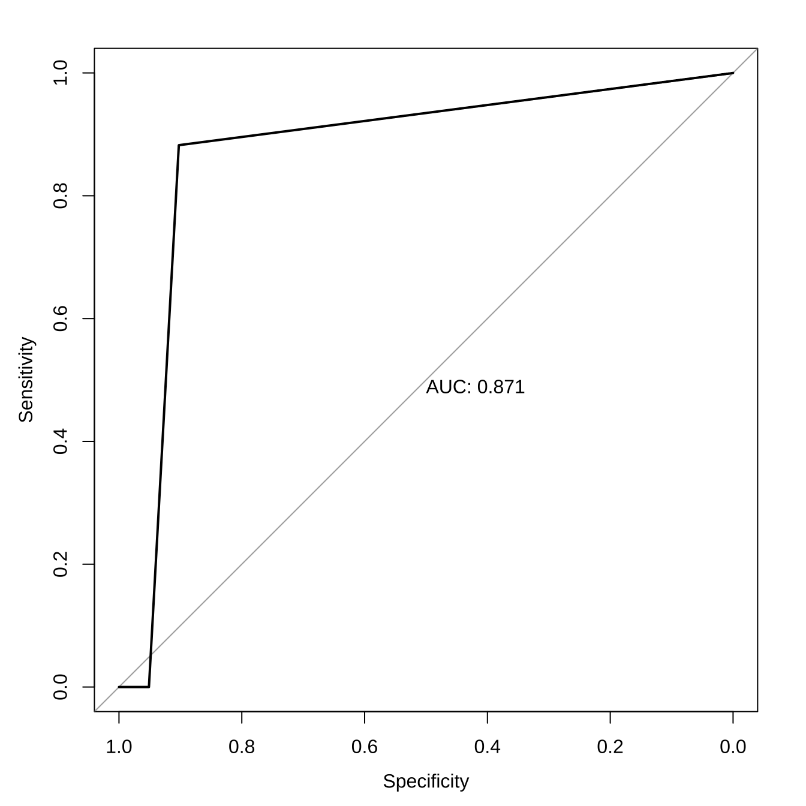
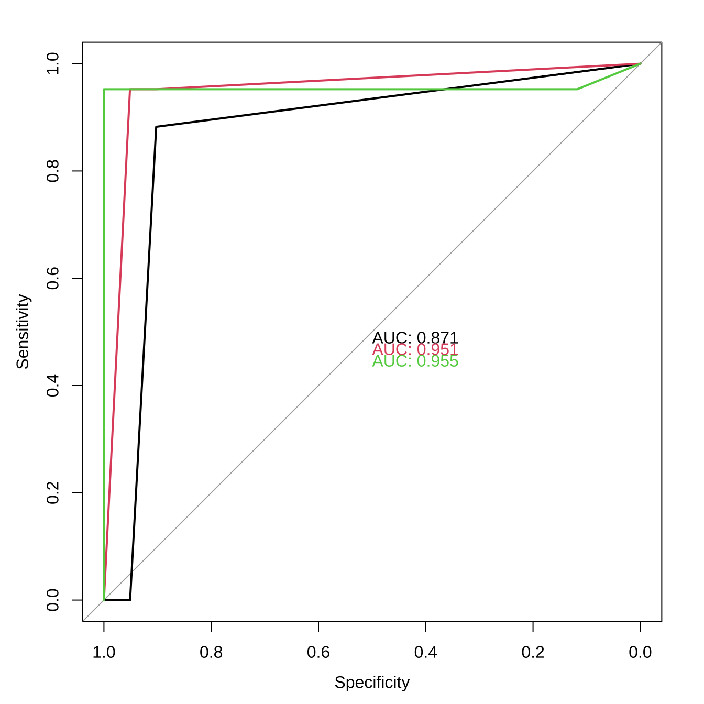

3.24 TIL20220324
3.24.1 기계학습 모델링 with Caret
- 데이터 준비
- 데이터 탐색
- 데이터 전처리
- 데이터 분할
- 모델 학습
- 예측 및 성능평가
- 모델 개선
# 데이터 준비
if(!require(dplyr)) { install.packages("dplyr"); library(dplyr); }
if(!require(caret)) { install.packages("caret"); library(caret); }
if(!require(ggplot2)) { install.packages("ggplot2"); library(ggplot2); }
if(!require(mlbench)) { install.packages("mlbench"); library(mlbench); }
data <- BreastCancer## Error in eval(expr, envir, enclos): object 'BreastCancer' not found## tibble [344 × 8] (S3: tbl_df/tbl/data.frame)
## $ species : Factor w/ 3 levels "Adelie","Chinstrap",..: 1 1 1 1 1 1 1 1 1 1 ...
## $ island : Factor w/ 3 levels "Biscoe","Dream",..: 3 3 3 3 3 3 3 3 3 3 ...
## $ bill_length_mm : num [1:344] 39.1 39.5 40.3 NA 36.7 39.3 38.9 39.2 34.1 42 ...
## $ bill_depth_mm : num [1:344] 18.7 17.4 18 NA 19.3 20.6 17.8 19.6 18.1 20.2 ...
## $ flipper_length_mm: int [1:344] 181 186 195 NA 193 190 181 195 193 190 ...
## $ body_mass_g : int [1:344] 3750 3800 3250 NA 3450 3650 3625 4675 3475 4250 ...
## $ sex : Factor w/ 2 levels "female","male": 2 1 1 NA 1 2 1 2 NA NA ...
## $ year : int [1:344] 2007 2007 2007 2007 2007 2007 2007 2007 2007 2007 ...## species island bill_length_mm bill_depth_mm
## Adelie :152 Biscoe :168 Min. :32.10 Min. :13.10
## Chinstrap: 68 Dream :124 1st Qu.:39.23 1st Qu.:15.60
## Gentoo :124 Torgersen: 52 Median :44.45 Median :17.30
## Mean :43.92 Mean :17.15
## 3rd Qu.:48.50 3rd Qu.:18.70
## Max. :59.60 Max. :21.50
## NA's :2 NA's :2
## flipper_length_mm body_mass_g sex year
## Min. :172.0 Min. :2700 female:165 Min. :2007
## 1st Qu.:190.0 1st Qu.:3550 male :168 1st Qu.:2007
## Median :197.0 Median :4050 NA's : 11 Median :2008
## Mean :200.9 Mean :4202 Mean :2008
## 3rd Qu.:213.0 3rd Qu.:4750 3rd Qu.:2009
## Max. :231.0 Max. :6300 Max. :2009
## NA's :2 NA's :2## species island bill_length_mm bill_depth_mm
## 0 0 2 2
## flipper_length_mm body_mass_g sex year
## 2 2 11 0## < table of extent 0 ># 데이터 전처리
if(!require(dplyr)) { install.packages("dplyr"); library(dplyr); }
data <- data %>% select(-Id) # 필요한 컬럼 제외## Error in `select()`:
## ! Can't subset columns that don't exist.
## ✖ Column `Id` doesn't exist.# 데이터 분할
if(!require(caret)) { install.packages("caret"); library(caret); }
train.index <- createDataPartition(data$Class, p=.7, list=F)## Error in createDataPartition(data$Class, p = 0.7, list = F): y must have at least 2 data points# 모델 학습
trCtrl.up <- trainControl(sampling = "up")
trCtrl.down <- trainControl(sampling = "down")
model.dt.up <- train(Class ~ ., data = data.train, method = "rpart", trControl = trCtrl.up)## Error in eval(predvars, data, env): object 'Class' not found## Error in eval(predvars, data, env): object 'Class' not found## Error in eval(expr, envir, enclos): object 'model.dt.up' not found## Error in resamples(model.list): object 'model.list' not found## Error in dotplot(model.resamples): object 'model.resamples' not found## Error in h(simpleError(msg, call)): error in evaluating the argument 'object' in selecting a method for function 'predict': object 'model.dt.up' not found## Error in h(simpleError(msg, call)): error in evaluating the argument 'object' in selecting a method for function 'predict': object 'model.dt.down' not foundrbind(up = mean(model.dt.up.pred == data.test$Class),
down = mean(model.dt.down.pred == data.test$Class) )## Error in h(simpleError(msg, call)): error in evaluating the argument 'x' in selecting a method for function 'mean': object 'model.dt.up.pred' not foundif(!require(pROC)) { install.packages("pROC"); library(pROC); }
model.dt.up.pred <- predict(model.dt.up, data.test, type = "prob")## Error in h(simpleError(msg, call)): error in evaluating the argument 'object' in selecting a method for function 'predict': object 'model.dt.up' not found## Error in h(simpleError(msg, call)): error in evaluating the argument 'object' in selecting a method for function 'predict': object 'model.dt.down' not found## Error in roc.default(data.test$Class, model.dt.up.pred[, 1], plot = T, : No valid data provided.roc(data.test$Class, model.dt.down.pred[,1], plot=T, print.auc=T, add=T, col="blue", print.auc.adj=c(0,-1))## Error in roc.default(data.test$Class, model.dt.down.pred[, 1], plot = T, : No valid data provided.## Error in text.default(1.2, 0.8, "Blue: Down sampling\nRed: Up sampling"): plot.new has not been called yet3.24.2 다중범주 ROC
if(!require(rpart)) { install.packages("rpart"); library(rpart); }
data <- penguins
data <- na.omit(data)
set.seed(1234)
train.index <- sample(nrow(data), 0.7*nrow(data), replace=F)
train <- data[train.index,]
test <- data[-train.index,]
model.dt <- rpart(species ~ ., train)
model.dt.pred <- predict(model.dt, test, type="class")
if(!require(pROC)) { install.packages("pROC"); library(pROC); }
mroc <- multiclass.roc(test$species, as.numeric(model.dt.pred))
pROC::plot.roc(mroc$rocs[[1]], plot=T, col=1, print.auc=T)
for(i in 2:3) {
pROC::plot.roc(mroc$rocs[[i]], plot=T, col=i, print.auc=T, add=T,
print.auc.adj = c(0,i))
}